ブラウザお絵描きサイト集
ブラウザお絵描きサイト集

これは私が普段使っている『手書きブログ』というお絵描きサイトの、ブラウザ上で動かすお絵描きエディタ。
このサービスのようにブラウザ向けのお絵描きサイトが世の中には沢山あるので、以前のサイトで自分用にまとめてみた。その改訂版の記事です。
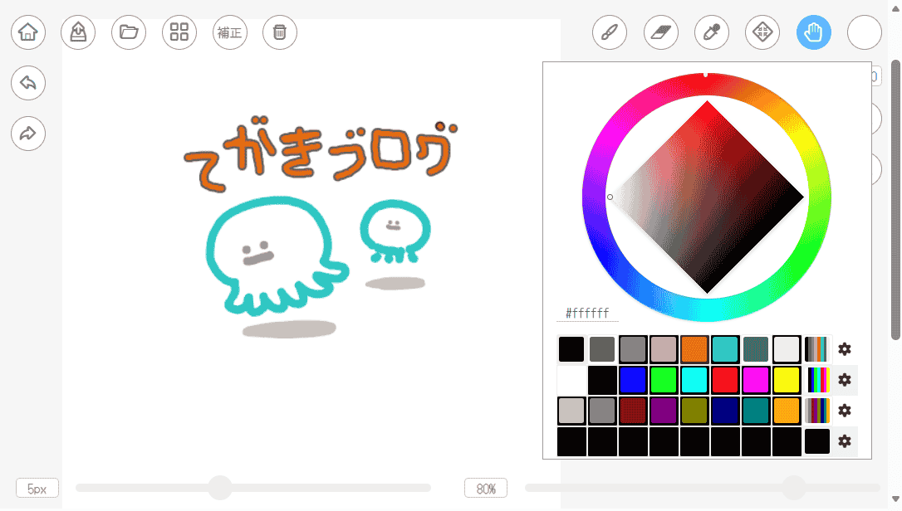
そもそも…
手書きブログは、サイト内に組み込まれているお絵描きツールで文章や絵を描いて投稿できるという、あまり数のないタイプのサービスなのだが、運営はあの「ポイピク」のPipa.jpである。
このサイトは2007年から続いている息の長いサービスにもかかわらず、運営があまりにも頼りなくていつサービス終了してもおかしくなさそうなのだ。
インストール不要のブラウザ上お絵かきエディタでしか得られないドーパミンがあるので、手書きブログが死んだ際に代わりになってくれそうなサイトを目指すまでこの記事の更新は続く！
情報提供もウェルカムですよ！なおMagicaldrawやMagmaなど有名なものは今回は除外した。
Loneti
https://loneti.ru/
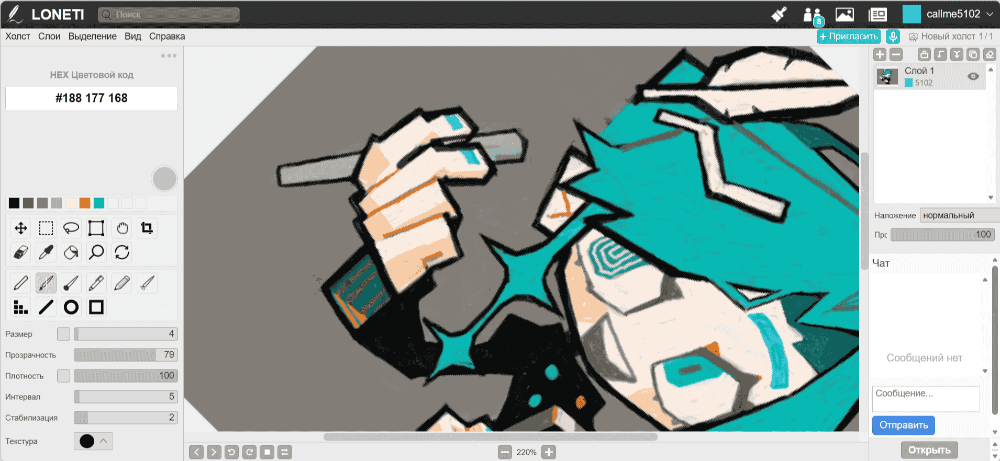
これはロシアのサイト。
シンプルで分かりやすいUI。ペンの書き味も悪くない。色も自由に作れるし、アップデートで図形ツールが使えるようになったらしい！
常設されたルームで絵チャもできるが、卑猥な絵ばかり描く迷惑ユーザーがいるのであんまり行きたくない（笑）
範囲選択やフィルタ機能などがあるが、選択した範囲を回転させるような細かい編集はできないようだ。あと地味にやり直しボタンの位置がわかりづらい。
お絵描きはアカウント不要、作品投稿ギャラリーはアカウント必須。
Color Cage
https://sazyoudnrk.github.io/color-cage/
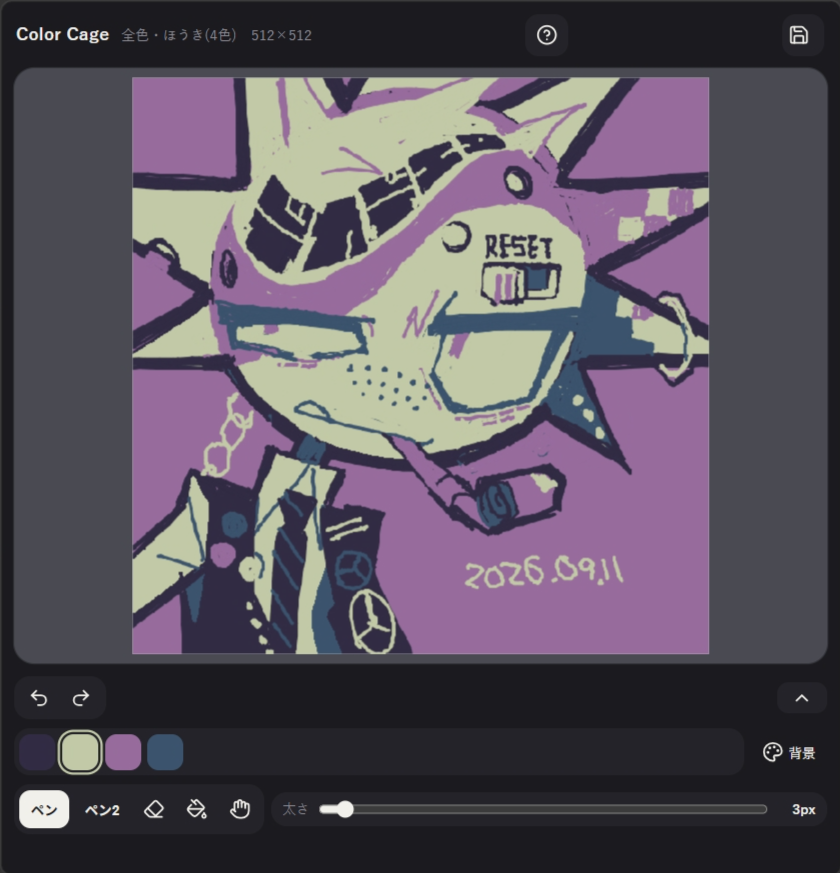
ランダムに生成されるいい感じのカラーパレットでお絵描き出来るサイト。日本の絵描きさんがリリース。シンプルで無駄がないUIだが、なぜかズーム機能だけが異常に使いづらい。
自分でパレットを作ることもできるが、ビビッと来るものが出るまでサイコロボタンを押してランダムにパレットを眺めるのもいい。
アカウント機能、作品投稿ギャラリーなどはなし。
ちなみにColor Cageの製作者はWebエンジニアではなく、このサイトは生成AIでプログラミングしたとのこと。特に心配はいらないと思うが念のため。
茶绘君
https://www.mrspaint.com/
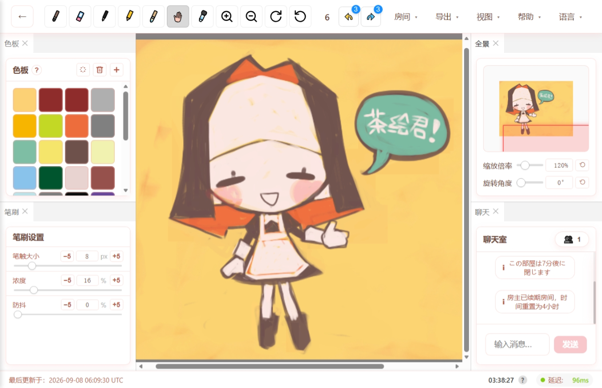
これは中国のお絵描きチャット。といっても向こうの人はほぼほぼMagmaを使ってるので、このサイト使ってる人は見たことないなあ。
アカウントを作らないと30分でルームが強制閉鎖されるのでそこが鬼畜ね。作ったルームは問答無用でトップページに載るが、人数制限を1人にすれば自分が入室してる限り誰も入ってこれないので助かる。
UIは情報量控えめでとても良いのだが、色コードで色を作れなかったり、回転ボタンとやり直しボタンが紛らわしかったりする。あとなぜかレイヤーを増やすことも消すこともできない。
ランダムにパレットを作ってくれる機能があるので、それで楽しむべきかも。
お絵描きはアカウント不要だがログインしないと30分でルームが消え、作品投稿ギャラリーなどはない。
きがるがき
https://kigarugaki.com/
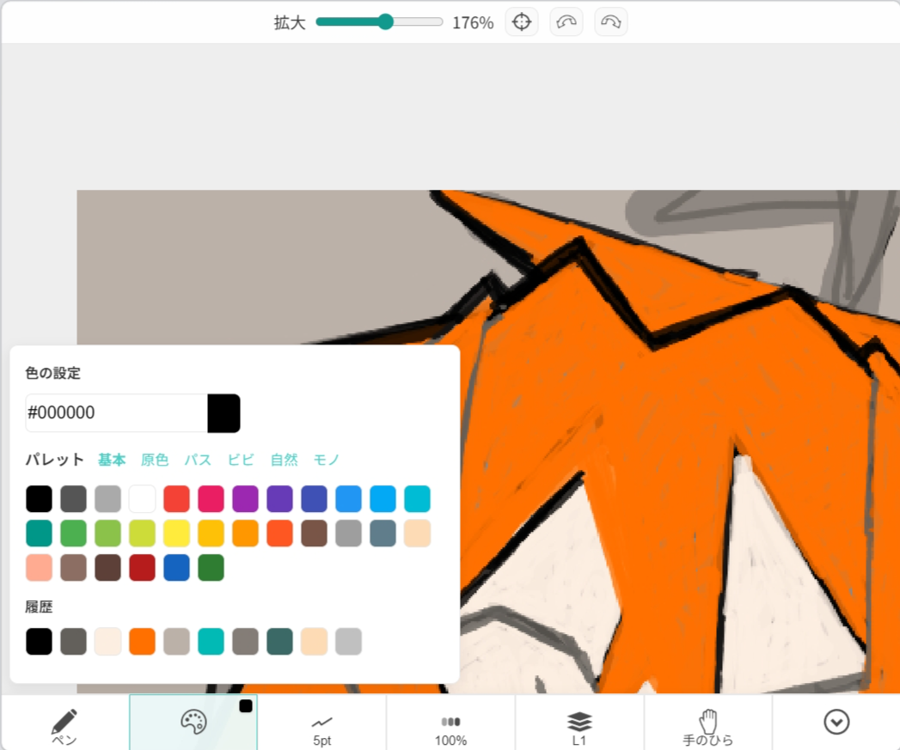
国産のお絵描きサイト。「タイッツー」の運営が開発した。サイト内のお絵描きエディタにはレイヤーやバケツがあるが、ペンは1種類しかなく本当に最低限。正直手書きブログとめちゃくちゃ使用感が似てる。
カラーコードで任意の色を使えるが、カラーパレットとして保存しておく機能はなく、代わりに使った色の履歴が保存される。
生成AI対策はバッチリで、更にウォーターマークをかけることも可能！
お絵描きはアカウント不要、作品投稿ギャラリーはタイッツーアカウント必須。
ブラウザで遊べる絵チャット
https://drawtalk.laineus.com/
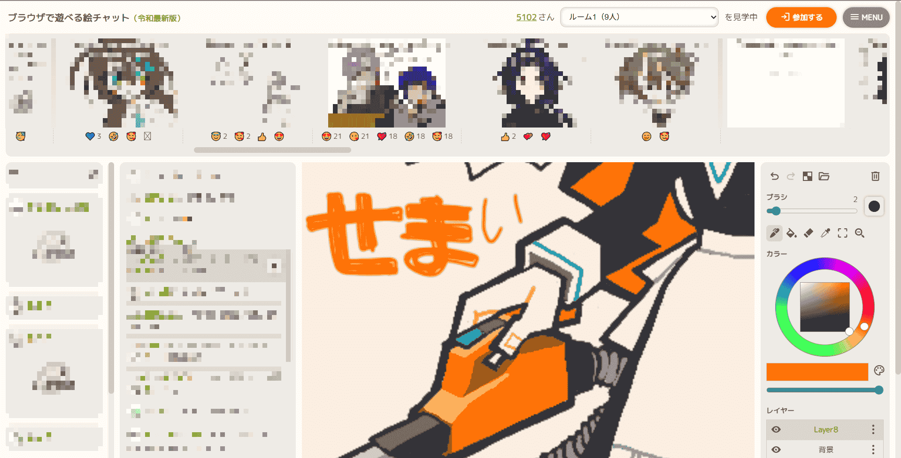
あくまでも「チャットをしながら絵も描ける」というサイトであり、「お絵描きチャット」ではないので注意。
ちょっと珍しいレイアウト・システムなので最初は戸惑った。画面上部にみんなの投稿作品、左側に他人のキャンバス、そしてチャットが並ぶので、これらをすべて表示にしていると作業エリアが狭すぎる。
エディタはあっさりしてて使いやすいわりにレイヤー機能や範囲選択、変形や回転、制作ファイルの書き出しや読み込みなどを備えている。アカウントを作ればハッシュタグ付きで投稿でき、コメントやスタンプなどで交流可能。
悪い点とするなら、このサイトは
小学生の巣窟なのでお察しの通りです。
Pastela
https://pastela.app/
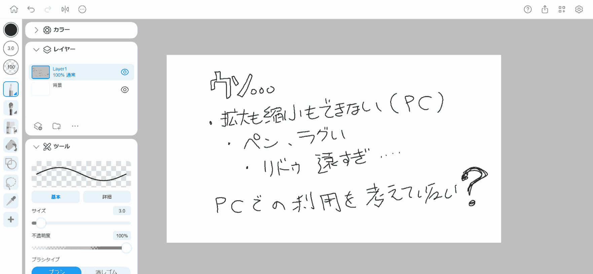
Pixivが2024年にリリースした、「iPad専用」のお絵描きアプリ。ブラウザ版が最近登場したらしく、先着1000名までベータテストに参加できるとのことだったので、少し触ってみた。
が、うーん…当たり前だが完全にタブレット専用に作られている。PCじゃ話にならないUIだ。
先着1000名の中の一枠をPCユーザーの私が取ってしまって申し訳ない気分になった。しかし、とってもシンプルで何も邪魔がないクリーンな作業画面なので、iPadやタブレットユーザーはぜひ試してほしい！
Premy
https://premy.hata6502.com/
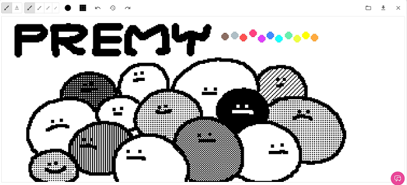
こちらは前の個人サイトでWeb拍手にて教えていただいたお絵かきサイト。ジャギーな絵を描くアプリと認識していいのかな？出来ることは少ないが、何がどこにあるかわかりやすい。
また、開発者がもともとMiiverseっぽいお絵描きサイトを開発していたというのもあり、用意されているトーンブラシを使用するとMiiverseやうごメモっぽい雰囲気になる。
致命的な謎仕様もある。例えば200x200pxの画像を読み込んでそれをベースに絵を描いて保存するとなぜか1440x1440pxにされてしまう点である。オリジナルの画像サイズで保存してほしいものだが…。
アカウントの概念なし。作品投稿ギャラリーはTwitterにハッシュタグ付きで投稿すればトップページに載る。
Pixiv Sketch（シンプルモード）
https://sketch.pixiv.net/draw/simple
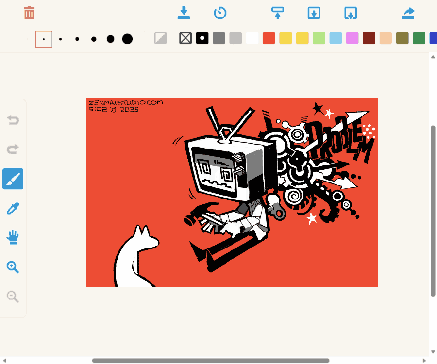
Pixivが運営する、ブラウザでのお絵かき機能を備えたお絵描きサイト。通常の「ドロー」モードと「シンプルモード」の二つが選べるが、前者はPCだとキャンバス移動の操作がカスすぎるので省略。
もともとPixivは「Drawr」という、手書きブログと似たような立ち位置だったお絵描きサイトを運営しており、それが死んだ代わりにこのpixivスケッチが生まれたんだけど、「シンプルモード」はそれと非常に操作感が似ているらしい。
これ、Pixivのメインサイトにお絵描き機能付けるだけで十分だと思う。なぜ『Pixiv Sketch』という別サイトを展開したのか、存在意義がちょっとわからないかも…。
お絵描きはアカウント不要、作品投稿ギャラリーはアカウント必須。
AXNOS Paint
https://axnospaint.github.io/axnospaint-lib/
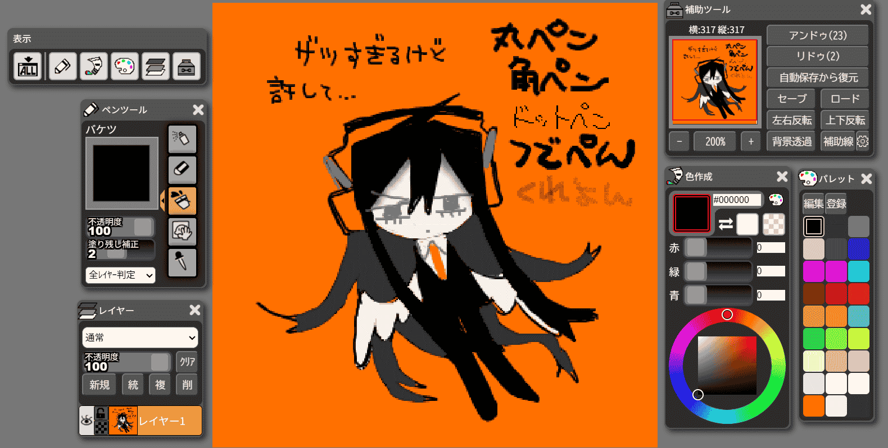
こちらは比較的新しい国産お絵かきエディタ。お絵描き掲示板向けに開発された割に機能が多く、私が普段描いてるようなイラストはAXNOS Paintで十分に描けそう。アイコンやツマミが大きめで直感的に触れるので良い。
これほど沢山の機能を備えているものの、キャンバスを回転して絵を描くということは不可能。あとマスコットキャラが邪魔なので消した。アンドゥ・リドゥボタンが使いづらい場所にある…個人的にね！
これほど機能が多いと、手書きブログが死んだ際の代替にはならなそう。ならないけど、とても使いやすいので、これをメインに使ってお絵描きしてる人がいても全く驚かない。マスコットキャラは設定でオフにできる。
お絵描きはアカウント不要、作品投稿ギャラリーは設置された掲示板やサイトによる。
おえかきボード
https://oekaki.natureblue.com/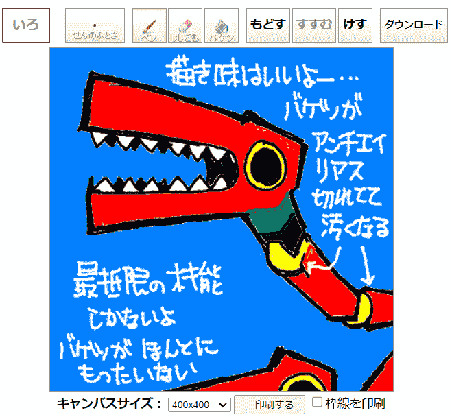
検索で割と上の方に出てくるサイト。ペン、消しゴム、バケツと基本的なツールのみ用意されている。
ペンが素直に動いてくれるので書き味は文句なし。キャンバスサイズも何種類か選べる。またキャンバスに画像をドラッグすることでキャンバス内に画像を取り込むことが出来る仕様。
気になる点もある。バケツツールで色塗りすると線画との境界に白いフチができてしまい汚い見た目になってしまう。
また、任意の色を作ることもできない。
アカウントや作品投稿ギャラリーの概念なし。
Paint онлайн
https://paint-online.ru/
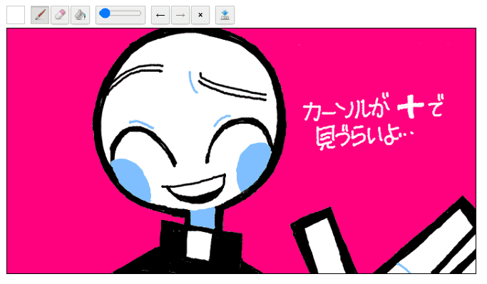
ロシアのサイト。「おえかきボード」と違ってバケツによる白いフチはかなり控えめだが、発生しないとは言っていない。
なぜか「おえかきボード」と全く同じ色しか使用できない。ペンタブ使用だとキャンバス上でカーソルが十字になるので非常に使いづらい。
特にこのサイトに言うことはないかな…これ使うなら他サイトの方が断然いい。
アカウントや作品投稿ギャラリーの概念なし。
2026/09/04